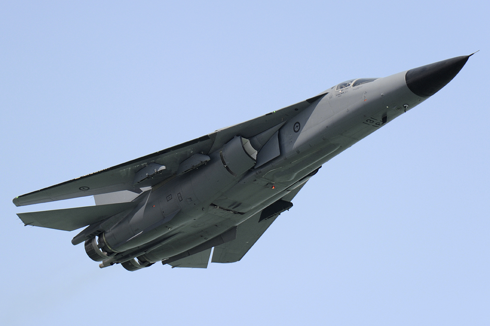

F-111 Aardvark
F–111 Aardvark az 1960-as évek közepén kifejlesztett, harcászati vadászbombázó repülőgép, melyet az Amerikai Egyesült Államokban a General Dynamics fejlesztett ki és gyártott. A gép teljesen fém építésű, félhéjszerkezetű, felsőszárnyas elrendezésű, változtatható szárnynyilazású, behúzható futóművel, utánégetős, kétáramú gázturbinás sugárhajtóművekkel, hermetikusan zárható kabinnal, katapultálható kabinkapszulával ellátott, kétszemélyes, vadászbombázó feladatkörre kifejlesztett nagy hatótávolságú, nagy tömegű repülőgéptípus. Eredetileg az Amerikai Légierő és a Haditengerészet számára közösen fejlesztett univerzális repülőgépet a Haditengerészet nem rendszeresítette, túl nagy mérete és magas ára miatt, helyette az F-14 Tomcat repülőgépet állította szolgálatba.